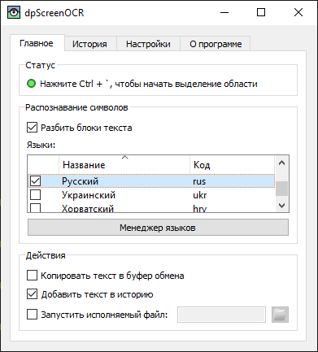

dpScreenOCR
dpScreenOCR — это программа, которая может извлекать текст из любой части экрана. Она избавляет от ручного перепечатывания при работе со сканированными документами, скриншотами, видео, элементами интерфейса и в других ситуациях, когда обычное копирование текста невозможно.

Особенности:
Прочитайте руководство пользователя для получения инструкций по установке, настройке и использованию.
Загрузите версию 1.5.1 (изменения, лицензия):

Внесите вклад, поучаствовав в переводе или разработке.